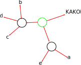
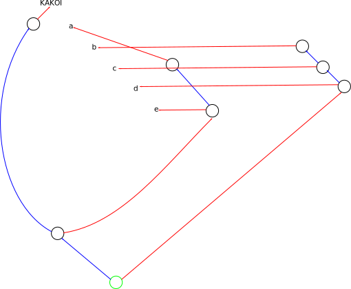
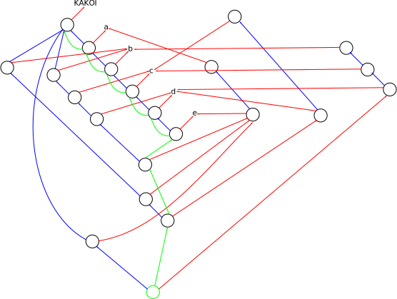
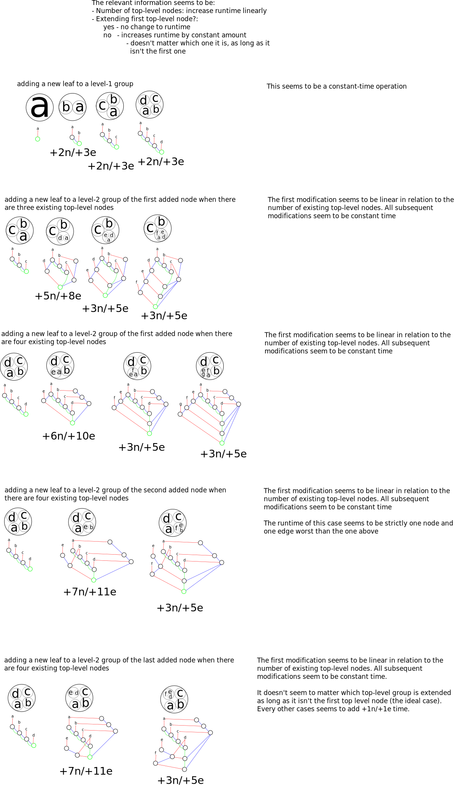
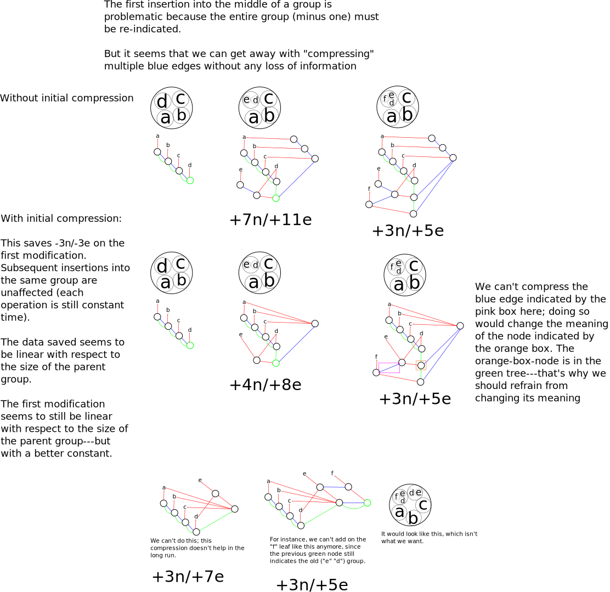

Let’s say that, after a while of using the system, the following is displayed on the screen:
This corresponds to exactly one red graph, shown below. For the red graph, it doesn’t matter what order the circles were drawn in—the graph is always the same. The red graph is used for drawing the circles on the screen. It contains just enough information to draw the circles properly, but not enough to interact with the system in a useful manner. For instance, undo/redo functionality is not possible using the red graph alone.
One of the nodes is green. This node represents the circle that encompasses every other circle.

This brings us to the red-blue graph. This graph is not unique with regards to the red graph—many red-blue graphs can correspond to the same red graph, but only one red graph corresponds to any red-blue graph. We get the red graph above by collapsing all of the blue edges in the red-blue graph below.
The reason multiple red-blue graphs can condense down to the same red graph is because the circles may be drawn in any order. One order of drawing the circles gives you one red-blue graph, a different order gives you a different red-blue graph. If the different orderings amount to the same picture at the end, then the different red-blue graphs will condense to the same red graph.
Each path of contiguous blue edges in the red-blue graph condenses down to exactly one node in the red graph. In this example, there are three paths of contiguous blue edges, just like how there are three (non-leaf) nodes in the red graph.
Like the red graph, the red-blue graph is still missing functionality, like history (undo/redo actions).
The green circle here represents the node at which we start constructing the red graph. To construct the red graph we first remove all incoming edges to the green node. Second, we condense all of the blue edges.
Why not just use the red graph—why add the blue edges? The blue edges are necessary to implement consistency with regards to modification of the graph. We don’t want the meaning of existing nodes to change when the graph is changed. To add more red arrows out of a node, we don’t just directly add the arrows—instead, we create a new node, add a blue arrow to the node we want to extend, and then add an arrow to the new thing we want to point at. This process preserves the meaning of existing nodes, while still allowing for growth of the graph.
‘Consistency’ essentially means that if node G is colored green, then no modification of the red-blue graph will change the red graph that is built by starting at G. For instance, in the graph below, we may want to at some point extend the things pointed at by the green circle. To do so, we would create a new node and a blue edge from the new node to the green node. We could then add a red edge from that new node to the new thing we wanted to point at. Notice that the meaning of the green circle is preserved; since we disregard all incoming edges, it still condenses down to the same red-graph, and thus the same rendering.

Now for the red-blue-green graph. Like how blue edges added consistency to the red graph, Green edges add history and undo/redo functionality to the red-blue graph. The green node (where we start creating the red graph from for visualization) can be moved upwards and downwards the tree formed by the green edges.
The green edges are similar in structure to Emacs’ undo tree, though they serve a slightly different purpose. In Emacs, the undo tree is used specifically for undoing and redoing editing actions. In kakoi, green edges are used for viewing past constructions, not necessarily reverting to them. Think of the green edges as more like the structure enabling git checkout as opposed to the structure enabling textual undo or redo. In particular, when kakoi is closed, the entire history is written to disk—not lost.
Another use of the green tree is finding the most well-developed representation of a certain idea. To do so, start at any node in the green tree. Traverse back up the tree until you hit a node that has more than one incoming green arrows. This node represents a representation of an idea that has been interpreted in two different ways, hence the two different green arrows coming into it.
The red-blue graph is useful mostly as an explanatory tool. In the software itself, we only ever build the red graph (for rendering), and the red-blue-green graph (for editing and production of the red graph).
To construct a red graph from a red-blue-green graph, remove all green edges. Next, remove all nodes that have no incoming edges, except for the green node. Repeat this process until every node has at least one incoming edge (or possibly zero incoming edges, for the green node). Next, condense the remaining blue nodes.
Let n be the number of nodes in the tree of green edges in a red-blue-green graph. There are exactly n red graphs that can be built from that single red-blue-green graph: one for each of the nodes in the green tree.
The red-blue-green graph below seems quite complicated because it is the result of exactly eight editing actions (one editing action for each green arrow).

Some initial runtime analysis of inserting a node in a group follows:

Thoughts on improving performance:
